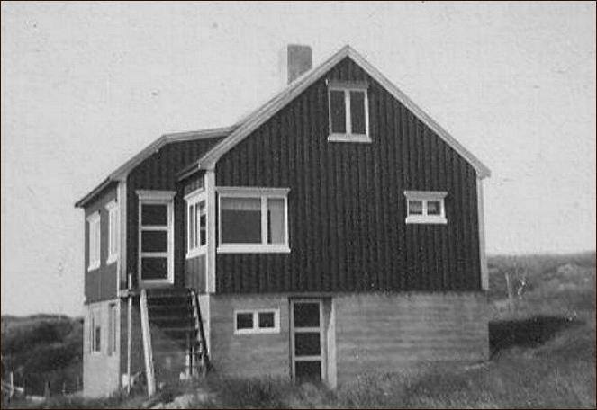
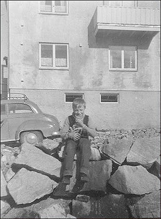

Liv og tanke
– en begynnelse
Å skrive en sjølbiografi framstår for meg som toppen av navlebeskuing. Men det kan jo likevel finnes grunner til å si “ja” til det. En grunn kan være at man faktisk har ei ganske interessant historie å fortelle, et interessant liv, et liv i eventyr og spenning. Jeg nøler nok litt med å svare bekreftende på at noe av det virkelig stemmer noe særlig på meg, men det jeg kan si er at det er en del uvanlige aspekter ved livet mitt. Jeg har levd i interessante tider, men kan i det jeg skriver akkurat det ikke la være å tenke på at det jo er en kinesisk forbannelse: “Gi du måtte leve i interessante tider”.
Det ligger absolutt noe i det. Vanen er utvilsomt en av de sterkeste, eller den sterkeste, drivkreftene i mennesket. Det man er vant til vil derfor til og med i ganske ekstreme tilfeller framstå som en «normal». Noen ekstreme aspekter er det nok ved min «normal» også, dersom jeg tenker etter, men for den som står i dette rare sentrum – altså jeg, egoet, «den eneste» som Max Stirner kalte det, har jo egentlig ingen ting annet enn den opplevde, ideologiske og tenkte målestokken å måle seg sjøl med. Det er kanskje ikke alltid jeg føler at jeg har noen veldig stor sosial eller samfunnsmessig verdi, men når man er både den som måler og veier og den som må vurdere resultatet er man i alle fall ikke på noen måte det som kan kalles «objektiv». Man kan altså helt trygt slå fast at den verste sjølkritiker ender opp som en motsigelse – fordi også det blir en måte å se seg som stående i sentrum. Jeg kunne stablet skjellsord og fyndord på mitt ego, men hvert eneste ett hadde kun vært mat i egoets forslukne sjølopptatthet. Derfor gir jeg ganske enkelt opp ethvert håp om noe mer enn skinnet av en «objektivitet» i forhold til “meg”.
Bare tanken på at en slik objektivitet i forhold til jeg’et kun er en illusjon, og at av sånne illusjoner har jeg allerede antakelig alt, alt for mange av, virker mer enn en smule skremmende. «Jeg» er mitt sentrum, egoet er mitt eget, opplevelsen er min, tanken, minnet, alt. Når jeg har talt det opp, målt det og veid det, satt «objektivitetens» lys på det, står jeg jo like forbannet der i mitt eget sentrum – uten noen annen flukt enn tanken, og naturligvis til sjuende og sist døden. Dette siste, opphøret av jeg’ets eksistens, er så ufattelig at menneskeheten i panikk har skrevet svære bøker og konstruert utrolige historier om et fantastisk etterliv. Om sjelevandring, om paradis, «evig liv», kun for å ha et sted der de kan gjemme seg vekk for døden. I et trassig utbrudd av “nei – det vil jeg ikke!”
Det eneste som jeg derimot tror lever etter meg blir mine gjerninger, både minnene og det konkrete resultatet av dem. Tanker og fantasier i form av bøker og det skrevne ord, men også det er i den store sammenhengen forgjengelig. Papir både gulner og brenner. Til og med i bibliotekene må gamle bøker vike for nye, de gis bort, selges eller kastes.
Sjøl gravsteinene vil en gang forvitre, dersom de mot formodning får lov til å stå lenge nok. Glemselen rammer alle til slutt. Til sist er vi kun «masse», og det eneste den på noen som helst måte kan endres på er å omdanne den til energi, og på sett og vis er det også nettopp det som skjer.
Men om døden ikke er noe stort mysterium, så kan man derimot trygt kalle selve livet for et. Liv. Dette ene som er felles for alt som lever, fra bakterien til blåhvalen.
Jeg må bare gi Mikhail Bakunin rett i at mennesket er naturen i det den forsøker å forstå seg sjøl, men jeg vil også sitere (!) min egen ganske begrensende innvending mot akkurat det: Mennesket er OGSÅ naturen i det den totalt misforstår seg sjøl! Vi prøver nemlig å sette oss over naturen, forandre alt vi kan røre ved, finne former for «mening» der ingen mening finnes, evig og alltid lures av nettopp dette; at hvert eneste menneske blir både bedradd og bedrar.
Jeg kan jo se at mitt liv slett ikke har vært eller er noe helt “normalt” liv, om da noe slikt egentlig finnes. Begynnelsen var likevel dramatisk nok, og fikk stor betydning for fortsettelsen.
Jeg ble født nesten tre måneder for tidlig i den vesle bygda Råket på Smøla, under krigen vinteren 1944. Elektrisk strøm var ennå flere år unna, så hjemmefødselen skjedde i lyset fra parafinlampene på husmannsplassen Staurhaugen. To jordmødre var til stede hvorav den ene yngste straks erklærte at jeg var død, mens den eldre slett ikke ville være med på det. Hun hadde vel vært med på flere liknende ting før, og erklærte at dette “er et seiglivet folkeslag”, og satte i gang med å få liv i meg. Noe hun visstnok greide temmelig fort. Men min bestemor sa at jeg mest både så og hørtes ut som en pjusket fugleunge. Antakelig hadde vel “gammeljordmora” slik hennes bemerkning tydet på tatt imot flere av min slekt der ikke alt hadde gått helt etter læreboka…
Vi bodde på Smøla til jeg var fem år. Min far bygde hus der, og vi flyttet fra “rønna” på Staurhaugen og inn i nyhuset da jeg var

tre år gammel. Jeg husker ikke mye fra det, men noen minner har i alle fall satt seg fast. Jeg husker at min fem år eldre søster satt ved kjøkkenbordet og pugget lekser, og jeg husker utedoet og dammen utenfor huset der jeg lekte med “båter” som nok ikke var noe annet enn fjølbiter. Gleden ved nytt hus ble kortvarig for familien – det skjedde ting som blant annet hadde med politikk å gjøre, og min far liksom mange andre kommunister på den tida fikk livet sitt snudd opp ned da han mistet arbeidet under ganske tvilsomme omstendigheter. Deretter måtte vi flytte til “byen”, altså Kristiansund.
Jeg husker faktisk også turen med dampbåten ganske godt. Foreldrene mine var allerede flyttet og jeg, min søster og min bestemor skulle komme etter. Turen gikk enten med dampbåten “Solskjær” eller “Kværnes”. Det røk opp til storm underveis og vi ble temmelig sjøsjuke alle sammen, båten rullet og stanget i bølgene og min søster fortalte etterpå til mine foreldre, ikke uten en viss barnslig skadefryd, at Besta hadde “rautet som ei ku” og at jeg hadde kastet opp på kofferten til en fremmed mann.
En tur til Smøla tar i dag ikke lange stunda, men den gangen da rutebåten gikk fra kai til kai rundt hele Smøla og lastet og losset både varer og passasjerer tok turen mange timer.
Vekk derfra, det var et mål! Tottan er et sted. Innerst i Vågen i Kristiansund. Men det finnes ikke på kartet. Det er ikke et offisielt navn, såvidt jeg vet.
Jeg bodde der som barn, la antakelig igjen mye av helsa mi der, i det trekkfulle og fuktige vesle rommet der vår familie på fem bodde. Men den gangen kunne man ikke være kresen på slikt her byen, for byen var blitt grundig bombet under krigen og husnøden hovedsakelig avhjulpet med nødtørftig oppsatt rekke på rekke av brakker, såkalte tyskerbrakker. En fikk ta det husværet en kunne få, dersom man verken hadde mye penger eller kontakter med makt som kunne fikse og trikse.
Vi hadde ingen av delene. Min bestemor Ane, min søster Anbjørg og jeg kom med dampbåten fra Smøla for å søke en ny tilværelse i byen. Mine foreldre var allerede her, og nå fulgte altså vi etter. Etter et kort midlertidig opphold i en bitte liten leilighet IOGT-huset som egentlig ikke var så dårlig, bare liten, flyttet vi igjen. Og så absolutt til noe mye verre. Fabrikken der min far hadde fått jobb tilbød husvære i noe som faktisk greide det kunststykke å være på alle måter enda dårligere enn til og med de brakkene okkupasjonsmakta hadde fått satt opp! Folk kalte den bare for “Hoembrakka”, etter fabrikken “Hoem Betong”, som lå noen få meter unna, innerst i Vågen – som forresten på den tiden var en av de virkelig beryktede delene av byen, der folk andre steder ifra var redde for å gå, eller rettere sagt passere igjennom.
Ungdommene, og for den saks skyld også vi unger som bodde der, ble vanligvis kalt for “vågaramp”. Mest bare for at vi bodde der vi bodde, men sjølsagt også fordi enkelte både unger og ungdom nærmest satte sin ære i å sørge for at ordet passet… Familien som eide fabrikken som lå vis a vis brakka var en av Kristiansunds mest profilerte kapitalistfamilier, og de eide også andre virksomheter i byen, som sildoljefabrikken Hoem Canning, der senere min søster etterhvert skulle finne arbeid – men det var ennå noen år fram i tid.
I “sildtida”, når båtene nærmest fylte havna i Kristiansund og den ramme lukta fra fabrikkene som brukte silda til å lage olje lå over byen som ei illeluktende tåke pleide folk gjerne å si at “det lokta pæng “. Men de kunne kanskje like godt ha sagt at de pengene stinket.
Jeg sto der på kaia like ved brakka der vi nå skulle bo og så ned i sjøen. Tenkte på sjøvannet på Smøla, så blankt og fint at du kunne se både tang og småfisk, og kanskje til og med en krabbe eller to nede på bunnen. Her var vannet grumset av kloakken som rant rett ut i sjøen, og av oljesøl og slam fra båtene, som lå der side ved side. Men det livet levde likevel nedi der, mest småfisk. Det var vanskelig å forstå hvordan de kunne, i det forurensede kloakkvannet. Jeg fikk høre hva folk kalte dem – dassmort, eller enda mer typisk kristiansundsk; “dassis”. Hvorfor flyktet de ikke, svømte sin vei, søkte livet i rent hav? Men kanskje de var som oss, stedbundne, redde for det ukjente, og så fant de vel noe næring i en del av det som menneskene kvittet seg med. Det var også andre sorter fisk der, noen av dem var ikke særlig vakre, og ikke engang kattene ville ete dem. I alle fall ikke de tamme som hadde et hjem. Villkattene var noe annet – de spiste antakelig hva som helst, stakkars. De bodde inne i stablene av sementrør og treverk. Skinnmagre og redde. Det hendte at noen fanget en av dem og ville temme den, men det var så godt som umulig. I så fall måtte en finne en som var bare noen uker gammel, og knapt avvent med morsmelken. Da kanskje, men altså bare kanskje.
Det var tydeligvis bra nok å bo i et slumhull så lenge voksne kunne få arbeid og tjene penger. Ingen kunne jo greie å leve kun av rent vann og frisk luft og grønt gras. Ironisk nok. I likhet med fiskene ved kloakkutløpet satte altså også menneskene næring foran helse, og hvordan skulle de egentlig kunne gjøre noe annet?
Min far var handikappet. Fikk poliomylitt da han var barn. Det ene beinet fungerte ikke, hang og slang viljeløst. Til de la ham på operasjonsbordet og stivet av kneet. Etter det kunne han gå med stokk. Men det var en særdeles dårlig jobb de hadde gjort, absolutt ikke særlig pent. Men det fungerte altså. På et vis. Så godt som alle brødrene hans var fiskere – det var det han også skulle bli, og han ville det og greide det også. Ei stund. Men det ble vanskelig. Så han begynte på skole. Ikke noe store greier, men nok til at han ble den aller første i familien som hadde noe slikt som en virkelig utdannelse. Da ble han ikke fisker lenger, han ble kontorist. Til og med trygdesjef i den vesle bygda. Fin tittel om ikke annet, antakelig brukbart betalt også, for han bygde hus. Trygdekontoret fikk ligge i kjelleren.
Jeg husker ikke noe av tilværelsen i det første vesle huset på Staurhaugen der jeg ble født, sjøl om jeg ble godt kjent med plassen senere. Men huset som de kalte Hagan, det husker jeg godt. Jeg er ennå merket av det også – jeg snublet på kjøkkenet og slo hodet i hjørnet på komfyren. Jeg blødde veldig. Et lite hvitt arr i panna gjør at jeg aldri skal kunne glemme akkurat det.
Jeg rakk å bli fem år og min søster ti før det ble snakk om at vi også skulle flytte til byen. Min bestemor og mor har forresten fortalt meg at jeg pleide å høre min søster i leksa det siste året vi bodde der – ikke fordi jeg kunne lese, det var ennå omtrent et år unna, men hun leste leksa si høyt og jeg husket hva hun leste… Foreldrene mine lo av det, hva min søster tenkte vet ikke jeg. Men jeg skal spørre henne, kanskje hun husker det enda bedre enn meg, hva vet jeg?
Det var et fint hus vi hadde på Smøla. Jeg har sett det mange ganger fra veien siden, men aldri våget å gå opp til det, og absolutt ikke å spørre om jeg kunne få komme inn. Se om jeg kunne kjenne igjen noe. Dersom anledningen mot formodning skulle by seg så kanskje jeg tar mot til meg en gang og gjør det. Eller sikkert ikke.
Jeg tror det kunne ha vært et fint hus å vokse opp i, til tross for at ungdomshuset lå ganske nært, på den andre siden av veien. I helgene hørtes ståk, musikk og haukende stemmer derfra – og jeg syntes det var litt uhyggelig.
Vi skulle ikke komme til å bo i Hagan lenge. Et drama var i emning, og det som skulle skje hadde sine røtter i politikk. Min far ble kommunist i 1943, inspirert både av Sovjetunionens innsats og av kommunistenes kompromissløse motstandskamp hjemme i Norge under krigen. Det tok litt tid før de borgerlige og Arbeiderpartiet greide å knekke kommunistene, men de gjorde det jo på femtitallet. Grundig og ubarmhjertig. Men likevel bare nesten. For både ideologien og partiet levde videre, om enn i den brede skyggen av den kalde krigen, der det offisielle Norge med både sosialdemokrater og borgerlige i ryggen tok parti og meldte Norge inn i NATO.
Men de første åra etter krigen visste alle enten de ville det eller ikke hvem de skyldte sin frihet, hvem som både hadde ofret mest og vunnet mest i kampen mot Det Tyske Riket og nazismen: Det var det kommunistiske Sovjetunionen.
For noen var slett ikke det noen god tanke, ingen god lærdom, tvert imot. En god del nordmenn hadde vært i USA under krigen, og der hadde de fått høre mye om kommunismen og “den røde fare”. Sjefsforfølger ble arbeiderpartimannen og amerikapatrioten Haakon Lie. Han var en dyktig og fanatisk antikommunist med både skrift og tale i sin makt, og greide virkelig jobben han hadde satt seg fore. Med glans. I hans ideologiske spor lå tusener av uthengte, arbeidsforbudte og utstøtte norske kommunister og andre politiske motstandere som Lie hadde sett seg ut som samfunnsfiender.
Ikke før var Nazi-Tyskland overvunnet så brøt Norge i likhet med flere andre vestlige land tvert den alliansen med Sovjet som var blitt skapt under krigen sammen. Landene laget den militære antikommunistiske spydspissen NATO og man startet for alvor forfølgelsen av kommunistene i sine respektive land.
I Norge ble det altså ironisk nok Arbeiderpartiet som bar tyngden av den antikommunistiske kampanjen. Et parti med de selvsamme ideologiske røtter som det partiet de nå ville ødelegge. Helt glemt var krigsårenes allianser, nå var det amarikafareren Lie og hans venner og medløpere som tok roret.
De var utvilsomt dyktige i det de hadde satt seg fore. For min far la de ei felle, utnyttet hans handikap og fellen deres virket så uskyldig at han gikk i den. Hadde ikke den fungert ville de sikkert fått det til likevel, men nå ble han i alle fall avskjediget fra stillingen sin. Det var heller ikke bare levebrødet han mistet, men også sin anseelse og troverdighet. Men i alle fall hadde han likevel greid å bli den første, siste, eneste NKP’er som ble innvalgt i et herredstyre på Smøla!
Han overlevde sjølsagt også nederlaget, flyttet til Kristiansund sammen med mamma, og de fikk begge jobb der. Men det var verre med husvære. En liten stund fikk de som avholdsfolk og IOGT-medlemmer midlertidig bolig i IOGT-huset. Men der kunne de jo ikke bo lenge. Motvillig skjønte mine foreldre at det var ingen vei tilbake til Smøla, og de trengte penger, så med tungt, tungt hjerte solgte de huset som min far hadde bygd og altså gitt det optimistiske navnet Hagen, eller som vi altså sier - “Hagan”.
Da måtte vi naturligvis komme etter. Besta, min søster og jeg. Symbolsk nok røk det opp til storm og den omtrent fem timer lange båtturen til Kristiansund ble et forferdelig mareritt. Jeg var ikke mer enn fem år, men jeg husker turen, kan huske at jeg kastet opp på en manns koffert. Husker at, som min søster sa etterpå, “Besta rauta som ei ku!” Vi laget forresten antakelig slett ikke så fine lyder noen av oss passasjerer ombord mens dampskipet “Solskjel” rullet og stanget i bølgene. Før vi endelig kom inn i smulere farvann, passerte under Nordsundbrua, og vi kunne gå ut og bort til rekka - og jeg så byen som skulle bli min framtidige hjemplass for første gang. Så mange hus, så tett sammen, jeg kunne nesten ikke tro det kunne være mulig. Byen virket uendelig stor, og jeg var uten vite det ennå nå brått blitt bygutt, ikke lenger kun smølaværing.
På kaia sto foreldrene mine og ventet på oss. Jeg hadde ikke sett dem på en god stund. Mamma løftet meg opp og jeg klemte henne så hardt jeg bare kunne. Hun hadde ei fin, gulaktig kappe på seg med en stor knapp i halsen.
Men byen var ikke bare kaia og de store murbygningene, ikke bare fine hus i forskjellige farger, som hadde gitt den navnet “Norges polychrome by”. Det var også byen der mye av bebyggelsen var blitt sønderbombet og brent av tyske bombefly og ennå ikke helt gjenreist. Mange av byens vanlige mennesker bodde derfor i grå, umalte såkalte “tyskerbrakker” som i enkelte områder sto samlet på rekke og rad. I sterk kontrast til nybyggenes fargegladhet.
Kristiansund var altså nå en by med skrikende mangel på boliger, og mange av de som fantes gav ikke boforhold som var noe menneske verdig…
Siden foreldrene mine var avholdsfolk og organiserte i IOGT fikk vi aller først et midlertidig opphold i losjens hus i byen, men derfra flyttet vi ganske snart til firmaet Hoem Betong sin arbeidsbrakke i Vågen. Tre voksne og to barn på et ganske lite rom. Ikke stort større enn kontoret mitt her i huset!
Overgangen fra eget hus til dette brakkerommet må ha kjentes grusom og nedverdigende for foreldrene mine, som kom fra det nesten nybygde huset sitt på Smøla. Et hus der min far hadde gjort ganske mye av snekkerarbeidet på sjøl.
Det var felles do i brakka, og med mange beboere ble det ofte kø og utålmodighet foran døra. Det var også andre former for gnisninger mellom beboerne, ikke minst på grunn av tynne vegger. Strøm gikk på en felles kurs, og det falt noen tungt for brystet av vi hadde radio som vi hadde tatt med fra Smøla, og det kom stadig klager på at radioen sto for høyt på. Da skrudde også gjerne noen på kokeplater, varmeovn og strykejern og dermed begynte lyset å bløkte av og på! Jeg husker at vi derfor satt veldig nær radioen og hørte nyheter, hørespill og barneprogram. Skulle altså mot formodning noen tro at vårt radiolydnivå den gang for eksempel kan måle seg med nabojentenes musikk når foreldrene ikke er hjemme, da tar de grundig feil. For da gjemmer Isabella seg under senga og jeg begynner å bli nervøs for at bilder skal ramle ned fra veggen på grunn av vibrasjonene – og likevel har vi ikke klaget! (Vel, når jeg tenker meg om og sant skal sies så banket jeg i veggen en gang i ren desperasjon, men jeg tror absolutt ikke det var noen som helst mulighet for at de skulle høre det).
Å bo i Hoembrakka nede på Tottan, som plassen altså het på folkemunne, det var å sette både humør, velferd og helse i fare. Dessuten fikk min søster også tilnavnet “Tottan”, og det var sikkert ikke så morsomt det heller.
Men verst var det kanskje at skolegrensa gikk mellom oss og nabohuset (!) slik at jeg ble “Vågaramp” på Vågens erkefiende Gomalandet sin skole. Jeg var liten og spinkel, men måtte pent lære meg å forsvare meg – og det i en helvetes fart.
Slik sett var det, så rart som det kanskje kan høres for de som ikke kjenner forholdene, veldig godt å få flytte fra Hoembrakka i Vågen til ei tyskerbrakke på Nordlandet med bare ett rom til – pluss et knøttlite kjøkken. Det var den gangen ei bomessig nivåheving nesten like stor som da vi flyttet til en skikkelig leilighet i et ordentlig hus i 1956. Det var jo noe som ennå lå et godt stykke inn i framtida. Men etter det bedret i alle fall helsa seg kraftig for alle i hele familien. Og jeg kan godt bruke alt dette som skjedde som en klinkende klar bevisførsel på at boligstandard og helse henger veldig nøye sammen. Naturligvis ikke bare i Norge, men verden over.
Men før alt dette kom jo den skjebnesvangre pirqueprøven som viste at jeg var smittet med tuberkulose. Det endret livet mitt brutalt .
Når boligstandarden økes og familier også får tilgang på rent vann sammen med økt inntekt, da er jeg overbevist om at flere ting vil skje i land som i dag på mange måter ikke er så ulike den første etterkrigstidas Norge. I likhet med hva som skjedde her på femtitallet ville det bli færre barn i hver familie, noe som er en veldig viktig. Kloden trenger ikke på langt nær så mange mennesker som det finnes i dag – i verste fall kan vi ende med resultater som likner Harry Harrisons framtidsdystopi “Make room, make room!”, der befolkningseksplosjon er i ferd med kvele den stakkars planeten vår.
Man kan i ganske mange land, til og med i vesten, ende med å måtte innføre en ettbarnspolitikk, slik man gjorde i Kina. Der det jo som et grusomt resultat av kombinasjonen mellom en slik politikk og et samfunn der guttebarn var langt mer verd enn jentebarn i familier der man “bare” fikk ei jente i noen tilfeller begikk barnedrap. Heldigvis er vi ikke så sinnssyke som det i vesten, men vi er kanskje heller ennå ikke helt der som den mannen var som spurte om Gerd og jeg hadde barn, og jeg naturligvis stolt svarte “to jenter”.
- To jenter? sa han. – Vi har to gutter og ei jente vi. Jeg hadde til da ikke ant noen ting om at han også hadde to gutter, for han hadde bare snakket om jenta. Urettferdig mot guttene? Jovisst, men det ville ikke vært så veldig lenge siden det var jenta som ikke hadde blitt nevnt.
Kanskje kan vi forhåpentligvis ganske snart virkelig komme dit som i alle fall jeg ønsker at vi skal – at et menneske, barn så vel som voksen, er like mye verd uavhengig av kjønn, rase, livssyn, familiebakgrunn, bosted, økonomi eller status. Eller antakelig ikke?
Uansett ble altså sjukdom min faste følgesvenn opp igjennom barndommen, der særlig lungene var utsatt. Jeg vokste det jo av meg, som man sa, men det tok tid og var til tider temmelig “nära ögat” som svenskene sier. Jeg rakk i alle fall å bli godt og vel voksen før elendigheten slapp taket. Da hadde jeg hatt flere lungebetennelser, utallige halsinfeksjoner og til og med tuberkulose. Dette siste gav meg nesten ett års opphold på Reknes Sanatorium i Molde… Vel, det ble jo forresten bok av den opplevelsen også til slutt, “Ensomheten er en sang”. Som jeg gjerne ville ha utgitt som en roman for voksne, ut ifra den tanken at tuberkulosen nå var nesten utryddet i Norge, og at de som på en eller annen måte var berørt av den nå var voksne – mange av dem til og med godt voksne! Men den ble altså utgitt for “barn og ungdom”. Greit nok. Jeg vet at mange voksne uansett har lest den, og at i alle fall noen unge slett ikke forsto den så godt. En positiv «bivirkning» hadde tuberkulosen tross alt for min familie. I vår sønderbombede by Kristiansund var det temmelig stor husnød etter krigen, og min sjukdom og mitt sanatorieopphold fikk med legens hjelp dyttet oss framover i boligkøen. Slik at vi ikke bare aller først fikk ei større og bedre brakkeleilighet, men senere også for første gang etter at vi kom til Kristiansund et husvære som i alle fall i standard om ikke i størrelse kunne måle seg med huset vi hadde flyttet fra på Smøla. Det var i ferd med å reise seg noe som nesten liknet litt på en helt ny bydel på Steinberget i Kristiansund, med murhus i to- og

firefamiliers boliger. Det var også to ekstra hybler på loftet, en tilknyttet hver leietaker, og skikkelige kjellere med vaskerom og boder. På bildet ser dere meg foran huset (vi bodde i øverste etasje) sammen med katten min, Nøste. Bilen, en Opel Olympia, var min fars første bil.
Der var det vi nå skulle få bo, og sjøl om jeg enda en gang skulle skifte skoleklasse, så fikk jeg i alle fall en god del kortere skolevei.
Jeg skulle altså flytte tilbake til Gomalandet skole, der jeg hadde gått mine første to år. Jeg var spent, men gledet meg også. Men den gleden skulle i første omgang bli brutalt kortvarig. Det ventet meg et mareritt som i alle fall viser hvor mye en lærer med noenlunde vett og forstand - og motsatt uvett og uforstand - kan ha å si for elevene i en skoleklasse. Jeg kom til en klasse styrt av en lærer, og jeg nøler ikke engang med å navngi henne. Vi kalte henne Frøken Pettersen. «Frøken» var naturligvis fellesnavn på kvinnelige lærere, uavhengig av om de egentlig var såkalt “frøken” eller ikke i sin sivilstand.
Frøken Pettersen var det som man på godt kristiansundsk kaller ei «grebbe», en lærer av den virkelig gamle autoritære typen. Dersom korporlig avstraffelse lenger hadde vært tillatt ville hun nok latt både meg og Bitten, den andre i klassen som hun hadde sett seg ut som sin syndebukk, fått kjenne både flathånda og spanskrøret… Nå måtte hun nøye seg med å smelle pekestokken i kateteret, sette krasse øyne i oss, gi kjeft, gjensitting og hun greide heller ikke noen ganger å la være å ta et tak i luggen eller i ørene.
Det hendte rett nok ikke så ofte, bare når hun virkelig ikke på noen måte greide å beherske seg, men jeg kan bare tenke meg hvordan hun må ha vært, alternativt ville ha vært, den gang da det var tillatt med korporlig avstraffelse i skolen. Jeg fikk senere høre at hun var spesialutdannet barnepedagog… Du store!
Gjett om jeg lengtet tilbake til min gamle klasse, og flinke og snille klasseforstander, Frøken S. Som slettes ikke hadde syntes det var det minste galt at jeg hadde med meg lærdom til skolen som jeg hadde fått hjemmefra og fra å lese masse bøker.
Resultatet kom ganske fort. Karakterene mine (joda, karakterer allerede!) stupte. Jeg var for eksempel vant til å lese “inni meg”, som man sa. Denne læreren krevde at jeg skulle røre leppene når jeg leste – altså si orda stille. Ikke mange fikk til det, så elevenes “stillelesing” hørtes ut som en haug med radioer dårlig innstilt på forskjellige stasjoner, som sto ganske lavt på. Da jeg rett og slett glemte meg, og fortsatte min stillelesning som før fikk jeg en tur i “skammekroken”, og etterpå beskjed om at dersom jeg ikke fikk til å lese slik hun ønsket at jeg skulle, så måtte jeg i alle fall følge linjene med fingeren.
Jeg ble mye sjuk etter det… og heldigvis var det en person der hjemme som forsto meg, og skrev de meldingene som trengtes når jeg ikke orket å gå til “slaveriet” for en dag eller tre. En ting til var jo at lærerinna også hadde sine klare favoritter i klassen, og de bistod henne etter beste evne med å mobbe oss to-tre elever som hun hadde sett seg ut som sine ofre.
Så måtte jeg jo bare gå det året om igjen, men du store mirakel! Jeg kom i en hyggelig klasse med Bjarne Hunnes som lærer – og jeg har mange ganger tenkt på at hadde jeg fått ham fra andre-tredje klasse så kunne mitt forhold til skolegang blitt helt annerledes. Karakterene min gjorde uansett nå et solid byks framover, og yndlingsfagene mine var Norsk, Tegning og Fysikk.
I fysikktimene hadde vi en lærer fra Smøla som het Arnold Andresen, og for å si det rett ut så gav hans timer meg lov til å briljere i dette faget, der jeg jo virkelig kunne vise meg fram. Jeg ble kanskje ikke så populær i klassen av det, men det var likevel noe å rette ryggen av når en annen elev ikke greide å svare på et spørsmål, og Andresen nikket mot meg og sa: “Du får fortelle dem det du da, Ingar”. Det kunne lett ha blitt farlig for meg, men ble det pussig nok ikke. Tvert om, vil jeg si. Mekanismene i forhold til mobbing, etc. er kanskje likevel ikke så enkle som det ofte blir påstått?
Kanskje hadde også “rakettklubben” noe å gjøre med det. Der vi inspirert av romkappløpet i egne øyne ble lokale utgaver av Sergei Koroljev og Werner von Braun… Vi konstruerte raketter, gjerne laget av tomme papphylser som vi fikk tak i på Brunsvikens Reperbane. Suksessraten var måtelig, men vi ble stadig bedre, og det som kom i veien var ingen ting annet enn at interessene skiftet, romkappløpet mellom Sovjet og USA endret seg også, det ble slutt på at romforskningen fikk store oppslag, slik den jo til og med fikk i lokalavisene(!) de første åra.
Jeg flyttet da jeg ble femten fra Kristiansund til Sunndalsøra, fikk nye venninner og venner, interessene endret seg fort, men i det minste bedret også engelsken seg såpass at jeg ikke lenger var avhengig av norske oversettelser for å lese science-fiction. Den første engelske sf-boka jeg kjøpte på Narvesenkiosken på Sunndalsøra var en såkalt ACE-double, med to romaner; Robert Silverbergs “The Silent Invader” på den ene siden, “Battle on Venus” av William Temple på den andre. Engelsken min var fremdeles ikke veldig god, det var sjølsagt grenser for hvor stort ordforråd man kunne få av å lytte på sangtekster som stort sett handler om kjærlighet, bilkjøring og dans. Men jeg leste Silverbergs bidrag. En gang, to, tre. Den språklige forbedringen fra gang til gang var merkbar. Temples bok fulgte, men den leste jeg bare en gang. Deretter ble det en ny tur, nytt innkjøp på Narvesenkiosken… og etterhvert ble det mange, mange.
Jeg var ikke BARE imponert heller, for det meste faktisk ikke i det heletatt. Tanken kom snikende at dette kunne jeg også greie. Minst like bra – nei, enda bedre! En tanke som nesten virket sjokkerende dristig i det den ble tenkt, men også besnærende utfordrende.
Men akkurat den historien er en helt annen enn denne her, livet og kjærligheten involverer etterhvert noen unge kvinner som gikk på Nesset Interkommunale Realskole i Eidsvåg. En av dem het Gerd.
Og hun ble snart årsak til en helt ny begynnelse. En revolusjon!
Denne stubben ble på sin side utvilsomt sjølbiografisk, men bare den temmelig magre og ufullstendige kortversjonen, og kun om før livet på sett og vis egentlig begynte… altså tida før “revolusjonen”.
Notat til leserne: Dette er en sammensatt av fragmenter og notater som omhandler noe av det samme, og som i utgangspunktet ble til to artikler. Det forekommer derfor enkelte ikke helt gode overganger og en del gjentakelser. Jeg mener likevel dette (under tvil) er bedre enn å presentere det i to helt separate artikler. Om det blir en fortsettelse? Kanskje. Jeg kan ikke si noe mer enn det nå. Skulle det dukke opp flere fotografier som er relevante lar det seg sikkert gjøre å redigere dem inn på et senere tidspunkt.
Referanser: For de uinnvidde i Kristiansundsdialektens mysterier – “det lukter penger”. 2 Det kan dere jo lese om i boka “Ensomheten er en sang”, som riktignok er en roman, og slett ikke uten videre noen “loggbok” over hva som virkelig skjedde. Dessuten er den også skrevet lenge etterpå, men likevel er den “sann nok” - i ånd om ikke i bokstav.